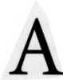

 strology is part of the warp and woof of Western culture. No one can avoid at least a superficial exposure to it. Words like saturnine, martial, mercy, consider, disaster, jovial, influenza, aspect, mercurial, and venereal all derive from astrology and permeate our language. Although astrology has been an avocation for over thirty years, I must confess that I am a skeptical astrologer. My accurate predictions repeatedly astound me, and I feel disappointed but never too surprised when I am wrong.
My first contact with astrology came when I was nine years old and my family was visiting an amusement park in Rye, New York. We came upon a machine filled with little scrolls that purported to tell your future for the coming month. My father put in a dime and out popped his monthly horoscope. On one side of the scroll was a description of his Gemini Sun sign. To my amazement, the scroll described my father to a tee. He loved to talk and was always taking short trips in his car to visit friends. The scroll said he might work in the transportation industry, and in fact he was a helicopter mechanic. Being a typical Gemini, he was always collecting things. Years later my stepmother would complain lovingly that all he did was "talk, talk, talk" and that he was forever bringing home "junk" which she, as a Scorpio, felt compelled to throw in the garbage. So many of the scroll's statements were accurate that I began to wonder if my father had rigged the machine. Years later, my wife would wonder if I rigged the outcome of horary questions. I realized my father had no prior connection with the machine, and my interest in astrology was born.
As an adolescent, I read whatever I could find on the subject. The local library had the works of Evangeline Adams, which I voraciously devoured. One prediction of hers especially impressed me. In her 1931 book Astrology for Everyone, Adams forecast the United States' entry into World War II. How did she know this? Adams noticed that, starting in 1776, each time Uranus was in the sign Gemini, which ruled the United States Ascendant, this country had been involved in a war. In 1776 there was the Revolutionary War and in 1860, the Civil war. In 1931 she wrote: "In the year 1942, Uranus once again enters the sign Gemini and unfortunately Saturn and Mars will also be in conjunction with it....This unusual configuration certainly portends another period when this country will be plunged into war." Evangeline Adams died in 1932, ten years before her prediction came to pass.
Other than the books of this outstanding woman, there was little else on astrology in the local library. As I began to look for other sources of information, I stumbled on Dell's Horoscope Magazine. When Dell made a special offer of a free natal horoscope with a paid subscription, I took them up on it. The quality of the free horoscope was disappointing. It was general and vague. Some of it was true, but much of it was inaccurate.
The skeptic in me gained ascendancy. I grew disillusioned with astrology and began to wonder if the predictions themselves did not cause their own outcomes. That is, did people born under different Sun signs act in certain ways precisely because they knew how astrologers expected them to behave? I gave up astrology for the next few years, but not before learning the basics of chart interpretation and how to cast a natal horoscope. Besides, I was about to start college and my interests lay elsewhere.
In college, I majored in mathematics with a minor in physics. I loved the liberal arts and took as many philosophy and religion courses as I could. My interest in the classics had begun in high school where I studied Latin, and my knowledge of Latin helped me research the medieval horary texts for this book. In 1967, I went to New York City to begin a doctoral program in mathematics. This was to be a turning point in my interest in astrology, for I met another devotee of the art. She was a fellow graduate student in the literature department. She knew a lot about theoretical astrology, but had trouble with the math.
Early one day I was helping my new friend calculate a natal chart. To thank me, she looked at my chart and told me I would have a visit from an old friend that very evening. It was not possible, I informed her, because it was the middle of the week and I wasn't expecting any visitors. I forgot all about her prediction and went to my classes. Later that evening, I was studying at home when the doorbell rang. I answered the door to find an old friend from college standing there. He happened to be driving through New York and took a chance at finding me in. Suddenly, I remembered the prediction my astrologer friend made that morning. I was back into astrology. I had to know how she could make so accurate a prediction, and I wanted to be able to do it myself. I began to collect natal data from all my friends and to give them written predictions based on transits for the coming year. In exchange, I asked them to tell me how accurate I was at forecasting events. I made many mistakes, but with feedback and experience I became accurate a good part of the time.
Let me illustrate what I mean by an accurate prediction. My sister-in-law, Barbara, an apartment dweller, wanted to buy a house. In March of 1987 she asked me to look at her chart to see when a move was likely. I studied her chart for an indication of a major move. I could find none until a year and a half later when, on December 7, 1988, Saturn would conjoin her natal Jupiter in her 4th house. Barbara searched for real estate and made an offer on a house in June 1988. Because she planned to close on the house in August, she informed me that my prediction was off by several months. I looked again at her chart and told her I could find no indication of a closing in August. We both agreed that time would tell. As it turned out, there were numerous petty delays and the closing had to be postponed until the end of November. Barbara finally moved on December 4, three days before the date I had given her in writing a year and a half earlier!
To get back to my story, circumstances beyond my control caused me to interrupt my graduate studies. Having completed a Master's degree, I taught high school mathematics for the next three years. When I returned to graduate work in 1971, I chose to study medicine. I specialized in psychiatry and had further training in Freudian psychoanalysis. I was fascinated by the workings of the mind and the symbolic language of the unconscious. All the while astrology-another symbolic system-continued as a hobby. Despite a busy schedule, I devoted time to it whenever I could. Astrology and psychoanalysis have a lot in common. Both arts regard the client as an individual with his or her unique personal history and world view. It is the symbolic interpretations of both astrology and psychoanalysis that fascinate me most.
Those familiar with astrological symbolism will feel at home with the following ideas from Freud's The Interpretation of Dreams. Freud noticed that his patients in psychoanalysis often had dreams about the treatment process. They would not dream about the therapy directly, rather in symbolic, disguised forms. For example, patients would dream about journeys in modern vehicles whose speed reflected their thoughts about the progress of the treatment. They referred to their unconscious by dreams about subterranean regions. Sometimes these same regions stood for the female body or the womb.
The following is a typical quote from Freud's dream book: "'Down below' in dreams often relates to the genitals, `up above,' on the contrary, to the face, mouth, or breast. Wild beasts are as a rule employed by the dream-work to represent passionate impulses of which the dreamer is afraid, whether they are his own or those of other people." The experienced astrologer will see how close chart interpretation is to Freudian dream analysis.
Let me give an example from a woman in psychoanalysis. Early in the treatment, before I knew a lot about the client's early life, she reported the following dream:
I enter a very large room, like a ballroom. Across the room is my old boyfriend from high school. We dance and I enjoy it very much. Then my husband enters the large hall. I feel like I have to make a choice between my husband and my old boyfriend.
On a manifest level, the dream refers to some recent difficulties the woman had been having with her husband. I am struck, however, by her emphasis on the large room. I get an image of this woman as a little girl alone, feeling abandoned, in a normal-sized room that seems very large to a child, and I say, "Could the large room refer to some experience you had as a child, a feeling of being all alone or deserted? Perhaps someone important to you died when you were very young?"
My client is visibly shaken and close to tears. She recounts how, when she was two years old, her mother gave birth to a baby girl who died two days later. Her mother became depressed after the death and my client felt alone and abandoned as if she lost both her baby sister and her mother at the same time. Understanding the symbolism of dreams is similar to interpreting the symbols in an astrological chart.
I approach horary the way I approach psychoanalysis. In either case, there is a mystery to be solved. Under ideal circumstances, I remain firm in my conviction that, with persistent cooperation and mutual understanding, the client and I can gain perspective on the conflicts involved. If we work diligently enough, we will gradually appreciate the client's world view, how it developed, why it is maintained so rigidly, and how it might more flexibly adapt to reality. In the course of this process, the client learns to take responsibility for the course of his or her own life.
Like the psychoanalyst, the horary astrologer must remain firm in the conviction that, with persistent effort and understanding, he or she can find the answer in the chart. Not everyone can become a horary astrologer, just as not everyone can become a psychoanalyst. According to Dane Rudhyar, "The safe and sound practice of horary astrology requires a basic knowledge of its technique; but it demands also of the practitioner a deep sense of psychological values, and as deep a sense of responsibility to humanity as a whole and to God Who is the personification of this universal intelligence."
The horary chart depicts a cross-section of a particular moment in time. It captures in symbolic form some vexing concern of the querent. Like the client in psychoanalysis, each horary chart is unique. If the astrologer can penetrate the meaning implicit in the chart, he or she can appreciate the nature of the querent's concern and its likely outcome. As in psychoanalysis, the responsibility for the final decision lies with the querent and not with the stars. Horary art is no substitute for sound judgment and personal maturity.
Let me return to my narrative. Around 1970, I came across an advertisement about horary astrology. A teacher in Brooklyn was collecting questions for his class. In return for sending him an inquiry, he promised to return the class's answer in the mail. I no longer remember what question I asked. I mailed it and forgot about it. Two months later I got back my original question with a simple "No" in quotes beneath it. By then the matter had run its course and "No" was the right answer. I thought it was interesting that the horary students got it right. But the skeptic in me said they had a fifty-fifty chance anyway. A toss of the coin might have been as accurate.
Nonetheless, this first experience with horary planted a seed. It seemed silly to think that the universe would trouble itself with my petty concerns. I later came across a passage from a nineteenth-century English occultist, Francis Barrett, who expressed the same opinion. In an 1801 book titled The Magus, or Celestial Intelligencer, Barrett commented about horary:
...our astrologers in most of their speculations seek without a light, for they conceive every thing may be known or read in the stars: if an odd silver spoon is but lost, the innocent stars are obliged to give an account of it; if an old maiden loses a favorite puppy, away she goes to an oracle of divination for information of the whelp. Oh! vile credulity, to think that those celestial bodies take cognizance of, and give in their configurations and aspects, continued information of the lowest and vilest transactions of dotards, the most trivial and frivolous questions that are pretended to be resolved by an inspection into the figure of the heavens.
Francis Barrett notwithstanding, what if there were something to horary? Over the next several years I read some on horary and experimented with a few charts. I felt frustrated that the authorities contradicted each other. I didn't have the time or energy to sort it all out, so I consoled myself with Barrett's attitude that horary is nonsense. Like Barrett, I looked with disdain on the art.
Then in the summer of 1987 I had an experience that changed everything. My friend Sara was visiting for a few days. She had been trying to get pregnant for the past year but was having difficulty and had suffered a miscarriage. Incidentally, Sara's Sun is in the early degrees of Sagittarius and Saturn had been transiting this area of the zodiac for the previous year. I remembered Evangeline Adams' warning that women often have a hard time with pregnancy when Saturn passes over their natal Sun.
At the beginning of that summer, Sara actually did get pregnant. Since she'd had so much reproductive difficulty in the prior year, she was worried about the new pregnancy. On the day of her visit Sara told me she had felt something change inside her body on the previous day. My first reaction was that my friend was "being neurotic" and that everything would be fine.
"Isn't there some kind of chart you can do?" asked Sara, who is not an astrologer. I was reluctant, but she insisted. I had the preconceived notion that Sara had nothing to worry about when I agreed to cast a horary chart. Still a novice at horary, I pulled out my books and sat down with her to read the chart. I wanted Sara to see the reasoning behind the answer so she wouldn't feel I was just trying to assuage her.
Sara's question was, verbatim, "Is this baby healthy?" From our discussion, my understanding of the question was: "Did something happen to the pregnancy in the past day or two, and will the baby be born healthy?" Sara asked the question on Thursday, 8/6/87 at 9:30 P.M. EDT at 73W01, 41N19. Thursday is a Jupiter day, and as you will see Jupiter rules the child's health in this chart. (See Chart 1 on page 22, Chapter Two.)
The next few paragraphs may seem a bit technical. Don't worry if you don't fully understand them. The ideas presented here will become second nature by the time you finish this book. At the time I cast the chart I used the Placidus house system. I now use either the Koch or the Regiomontanus house systems in horary work.
The 1st house of the horary chart always represents the querent-the person asking the question-Sara, in this case. The 5th house is the house of children and is where we locate Sara's child. Health problems are shown by the 6th house. But since we are concerned about the child's health, we must count six houses starting at the fifth of children. Five, six, seven, eight, nine, ten. So the 10th house represents the child's health.
The 1st house stands for Sara and her physical body. Jupiter (expansion) is intercepted at 29° 28' Aries in the 1st house-apt symbolism for something growing inside her body. The sign Cancer rules the 5th house of children so the Moon rules the child. The 5th house also contains Mercury at 0° 19' Leo, making it a co-ruler of the child. Jupiter rules the cusp of the 10th house of the child's health. In the 10th house are Neptune retrograde at 5° 40' Capricorn and the Moon at 10° 21' Capricorn. Jupiter rules the baby's 6th house of health, with Neptune and the Moon as co-rulers.
The fact that Mercury (the baby) had just completed a square to Jupiter (the baby's health) immediately disturbed me. The square occurred on the very day that Sara noticed a change inside her body. Squares mean obstacles and problems. Had the fetus suffered a health problem the previous day? Jupiter ruling the baby's health is fortunate because Jupiter is benefic and strong in the 1st house. But two factors weakened Jupiter. It was intercepted in the 1st house and was in the last degree of Aries. Intercepted planets are not free to act, and last degrees impatiently imply a crisis or change of state as the planet prepares to leave one sign and enter the next.
Retrograde Neptune ruling the baby's health was not a good sign either. Maybe the Moon, ruler of the baby and co-ruler of the baby's health, would give a positive answer. The Moon makes no aspects to the other rulers of the baby. No information there. The Moon's final aspect before leaving the sign is a square to Jupiter, again showing health problems. The Moon's final aspect shows in a panoramic way the ultimate outcome-an unfavorable one in this chart.
The other indicator of the end of the matter is the 4th house of the person under consideration. We are inquiring about the baby in the 5th house. The 4th house of the 5th is the 8th house of the chart. Scorpio in on the Eighth cusp and Pluto, the modern ruler of Scorpio, lies at 7° 16' Scorpio in the 8th house. Pluto is strong in his own sign and house. Clearly Sara is worried about death. Pluto, Scorpio, and the 8th house are all natural rulers of death. Mercury (the baby) is applying with an orb of five degrees to a square with Pluto. The baby is facing death. The five-degree orb suggests Sara may learn something about the question in roughly five days. Time is hard to judge accurately in horary work. In addition, Mars, which rules the radical 8th house of death, lies in Leo in the unfortunate 6th house of the radical chart. The Moon in Capricorn applies to a quincunx (150°) of Mars, an aspect associated with stress and illness.
Try as hard as I might, I could find no favorable indications about the baby's health. I tried to reassure Sara that I was just a novice at horary. Maybe there was some horary rule I didn't know that would change the answer. I urged her to ignore our reading of the horary chart. She replied that the chart merely confirmed what she already suspected.
As part of her prenatal care, Sara had scheduled a chorionic villa sampling for Wednesday, August 12. When Sara's doctor repeated the sonogram on that date, he could detect no fetal heartbeat. The doctor estimated that the fetus had been dead about a week. In terms of the horary chart, the fetus had died on the same day that Mercury squared Jupiter, and Sara learned this news six days after we read the chart. Let me review the chronology of the events related to Sara's question:
July 29: Sonogram shows a healthy fetus.
August 5: Sara feels "different" about the state of her body and worries something has gone wrong with the pregnancy.
August 6: Horary chart is unfavorable for the health of the fetus.
August 12: Repeat sonogram shows no fetal heartbeat. Fetus has been dead about a week.
When Sara called me with the news, I shuddered. The correspondence between the horary chart and the unfolding of events was uncanny. I felt as if we had tapped into a powerful force within the universe and that we should tread lightly. This eerie yet reverent feeling prevented me from doing horary charts for several months. I pondered Sara's chart for a long time. Finally I overcame my trepidation and read every horary chart I could get my hands on. As I compared each new chart to my experience with Sara's chart, I came to realize an important truth about horary: Earnest questions produce straightforward charts of profound accuracy. Trivial questions produce silly charts with contradictory indications. Horary works best when you need it most.
In researching this book I learned that I was not alone in discovering this aspect of horary. Almost a century ago Alan Leo wrote, "It is important to remember that no questions should be asked, nor any horary figure cast, unless the mind is truly serious and quite anxious concerning the matter on which the information is sought. Otherwise, disappointment and erroneous judgment will certainly result." I caution the reader to heed Alan Leo's advice.
The experience with Sara's chart inspired me to read widely both in horary itself and in the history of Western astrology. I wanted to master the technique and see how it developed through the ages Still my skepticism persists. Could my accuracy, however detailed and precise, be the result of chance? It seems unlikely, even if I have a fifty-fifty chance of being right with "yes/no" questions. And why do I sometimes get the wrong answer when I use the same principles to arrive at my conclusions?
I stand in good company in getting wrong answers to horary questions. Munkasey, for example, reported that his personal research into financial astrology showed that "about three times in four astrology will accurately answer the astrological trend or direction of the market." He found that horary astrology was about 75% accurate in answering specific questions about buying particular stocks at a certain date and time. Munkasey recommended, however, that one devote at least seven years to studying horary before using it to make financial decisions.
A second personal experience pierced another hole in my skepticism. I had noticed over the years that when I made predictions based on transits to my natal chart, the timing was always slightly off. About ten years ago, I rectified my chart to a birth time five minutes earlier. Since then, the transits have triggered events like clockwork. My birth certificate says that I was born at 9:09 A.M. EWT. My rectified chart changes the birth time to 9:04 A.M., five minutes earlier. It made sense that the nurse who did the recording might have been late in recording the exact time. The clock in the delivery room might have been a few minutes fast. I despaired of ever knowing the true time of my birth.
Then, in the summer of 1989, my stepmother, forever cleaning out my father's junk, tackled the trunks in the attic. She found a notebook in which my father had recorded the birth times of all his children. Unknown to me, he had been present at each birth and kept his own records. When she told me this news on the phone, I got excited. But then she couldn't remember where she put the book! I asked her if she recalled what time my father had jotted down for my birth. She thought it said five in the morning. My heart sank. How could I be four hours off in my rectification? Finally, she found the book. She was right about the five, but it wasn't 5:00 A.M.-it was 9:05 A.M.! There, preserved in my father's script, was the time within a minute of the rectification I had made using time-honored astrological principles. Maybe there is something to this stuff after all.
I hope by now you are interested enough to want to read on. By the time you finish this book, you should be able to interpret a horary chart. In doing so, you will need to come to terms with the confusion and contradictions found in horary practice. The best way I have found to do this is to study its development. Throughout the text I have tried to show how the ideas originated, why the contradictions exist, and what decisions the modern horary astrologer must make to practice the art. For further details on the history of astrology and traditional techniques, I recommend Classical Astrology for Modern Living by J. Lee Lehman.
HISTORICAL INTERLUDE PTOLEMY AND THE MUSIC OF THE SPHERES
The Greek astronomer Claudius Ptolemy (A.D. 127-145) is regarded as the father of modern astrology. Ptolemy's Tetrabiblos (four books) on astrology summarized all the available knowledge on the subject and became a bible for future generations of astrologers. Ptolemy was influenced by the numerology of the Greek philosopher Pythagoras who sought mathematical harmonies in the universe and developed a mathematical theory of music.
Ptolemy combined the Greek theory of music with his knowledge of astrology to produce a theory of astrological aspects between signs of the zodiac. He recognized four traditional ("major") aspects among zodiac signs: the sextile, square, trine, and opposition. It made no sense to speak of a sign conjoining itself, but Ptolemy wrote that the planets could be related "by bodily conjunction or through one of the traditional aspects."
Why only four major aspects among signs? Because these aspects repeat the same harmonic ratios of the musical scale. The important ratios in Greek music were 1:1, 1:2, 1:3, 2:3, and 3:4. Two signs in opposition "meet on a straight line" and have a type of 1:1 correspondence. A square has a 1:2 relation with an opposition. Similarly, a sextile and a trine have a 1:3 and a 2:3 relation with an opposition, respectively. Finally, the ratio of a square to a trine is 3:4. Because the four traditional aspects have the same mathematical harmony as the Greek musical scale, Ptolemy spoke of the "music of the spheres," and this became the basis for all future work in astrology.